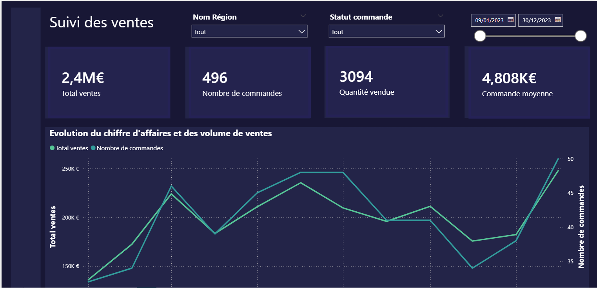
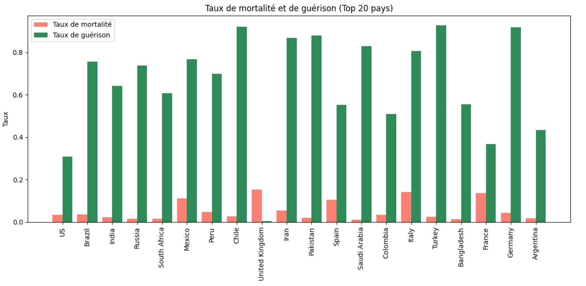
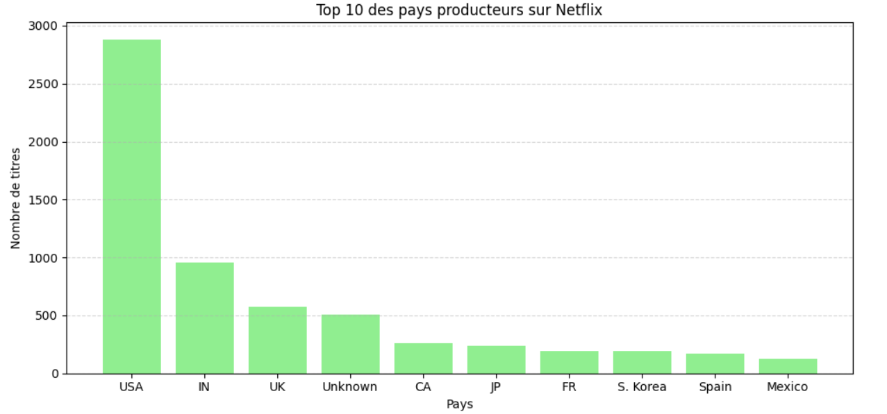
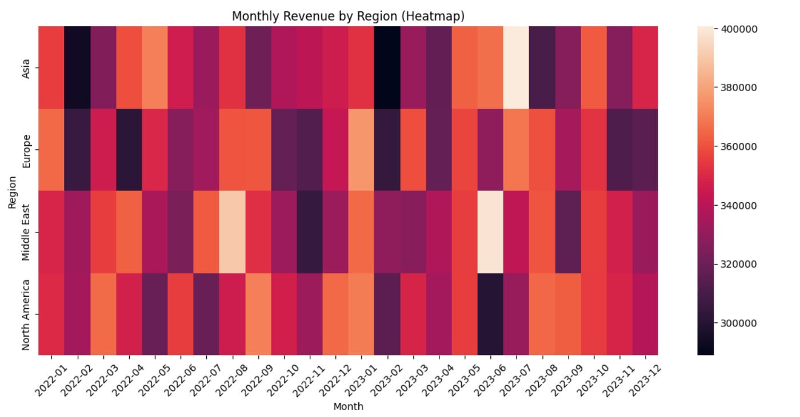
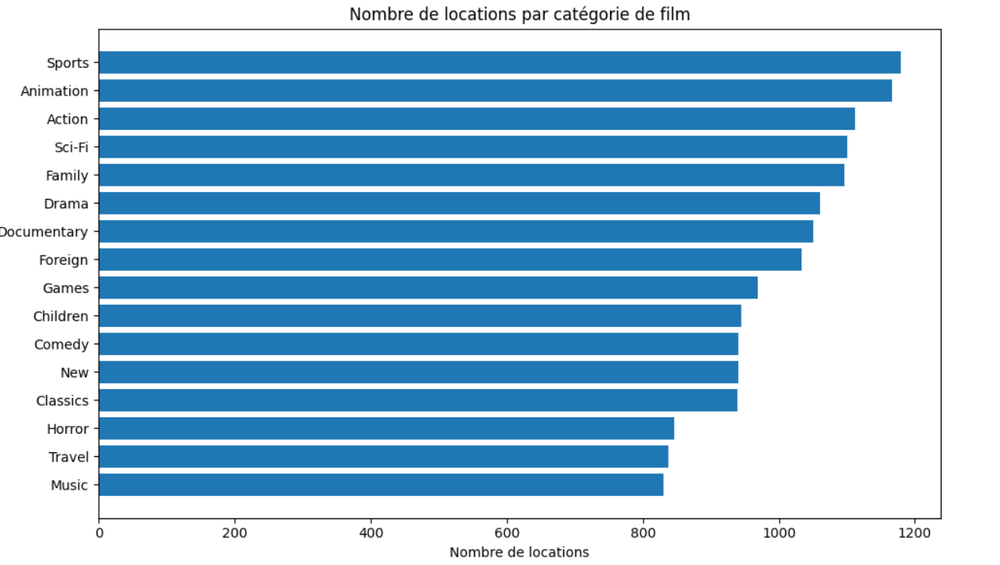

Data analyst en début de carrière, je développe mes compétences en analyse, visualisation et interprétation de données afin de transformer les données en insights utiles à la prise de décision.
Bonjour, je suis Odysseas GOMA NKALA, titulaire d’un Master en Marketing International. Au fil de mon parcours, j’ai progressivement orienté mes compétences vers l’analyse de données et la performance business.
Mon expérience en SEO, analyse de verbatims clients et optimisation de contenus m’a permis d’exploiter des données variées, d’identifier des tendances et de formuler des recommandations concrètes pour améliorer l’expérience utilisateur et la performance.
Aujourd’hui, je continue de développer mes compétences en Python, SQL, Power BI et data visualisation à travers des projets pratiques d’analyse de données. Mon objectif est de mettre la data au service de la compréhension, de l’analyse et de la prise de décision.
Python, SQL, Pandas, NumPy, Excel
Power BI, Matplotlib, Seaborn, Plotly
Google Analytics, Google Search Console, SEMrush, Ahrefs
Jira, Trello, méthodes Agile, Microsoft Teams

Dashboard réalisé avec Power BI permettant d’analyser les performances de ventes selon les régions et les périodes.
Travaux réalisés :
Cliquez sur l'image pour télécharger le rapport Power BI.

Analyse exploratoire de données sur l’évolution de la pandémie afin d’étudier les cas confirmés, les décès et les guérisons à l’échelle internationale.
Travaux réalisés :
Technologies : Python, Pandas, Matplotlib, Seaborn, Plotly

Projet d’exploration du catalogue Netflix afin d’identifier les pays les plus représentés et de mieux comprendre la distribution des contenus.
Travaux réalisés :
Technologies : Python, Pandas, Matplotlib, Seaborn

Analyse exploratoire d’un dataset de ventes Amazon afin d’identifier les écarts de performance commerciale selon les régions et les périodes.
Travaux réalisés :
Technologies : Python, Pandas, Matplotlib, Seaborn

Exploration d’un dataset de films afin d’identifier les catégories les plus représentées et mieux comprendre certaines tendances du secteur cinématographique.
Travaux réalisés :
Technologies : Python, Pandas, Matplotlib, Seaborn
Formation complémentaire : Python et SQL pour l’analyse de données
Je souhaite évoluer dans un environnement où je peux mettre à profit mes compétences en analyse de données et visualisation afin de contribuer à des décisions éclairées et à des projets à impact.
Email : odysseas.gomankala@gmail.com
GitHub : github.com/Odysseas18